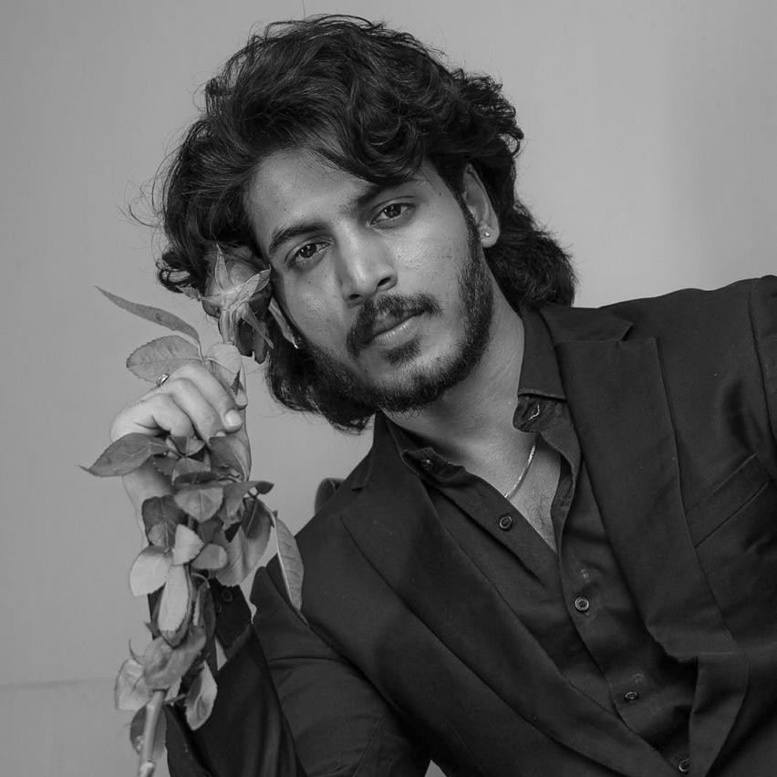
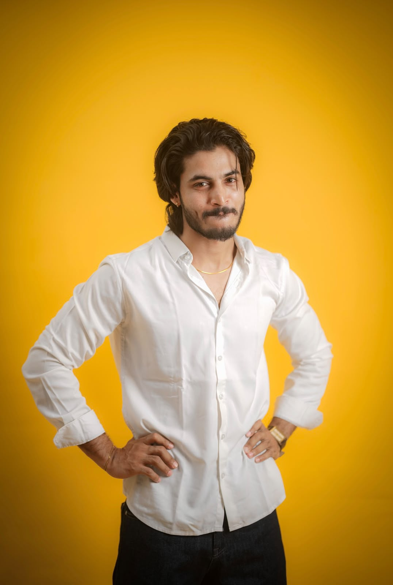
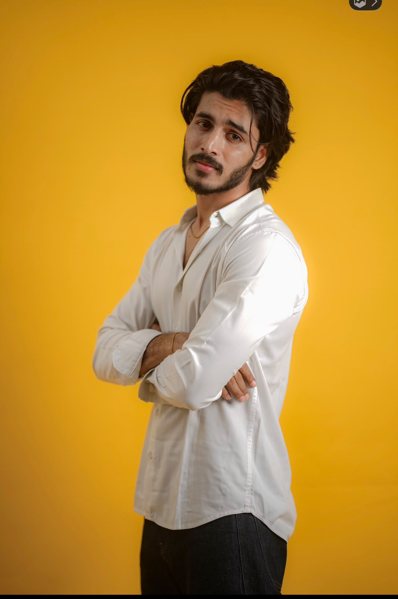
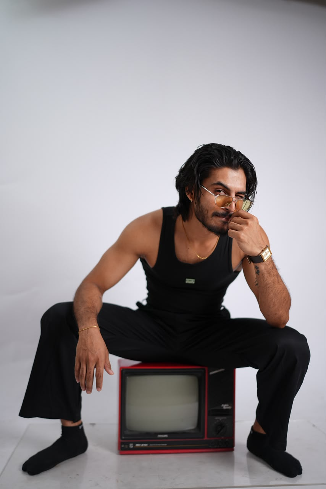
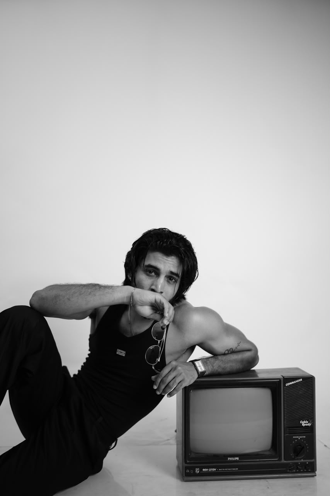
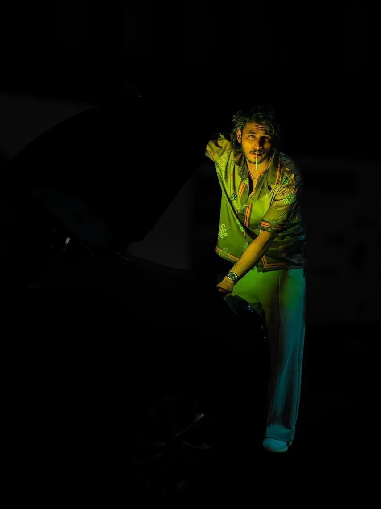
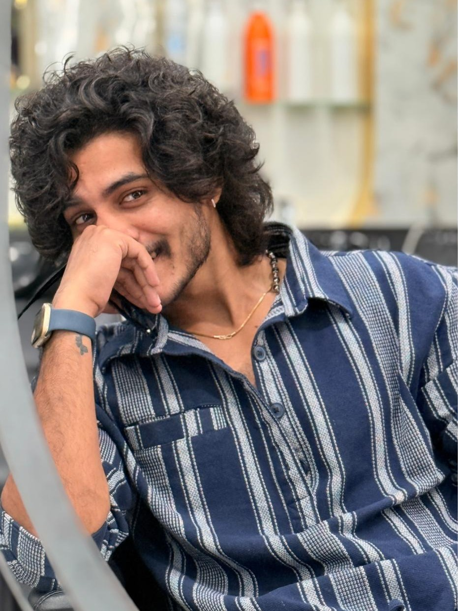

Cinematic green-light portrait.
Page 1
SRAVAN KUMAR
Actor | Model | Mr. India France 2025
From Vizianagaram to Paris: A Global Presence.

Professional studio portrait.
Page 2
About Me / Biography
Sravan Kumar is an Indian actor and model with a unique international trajectory. Beginning his career in 2018, he moved to Paris in 2021, gaining exposure to European creative standards.
- Languages: Fluent in Telugu, Hindi, English, and French.
- Current Project: Lead in the feature film Chakkora.
- Title: Winner of Mr. India France 2025.
| Height | 186 cm (6'1") |
|---|---|
| Age | 25 |
| Build | Athletic / Lean |
| Base | India / International |

Back profile character frame.
Page 3
The Raw & Rugged
Authentic, relatable, and grounded. Showcasing the everyman or regional hero persona.
The Raw & Rugged
Page 4
Look 1 - The Cinematic Edge
High-intensity, moody, and character-driven. Ideal for Neo-noir, Thrillers, or Anti-hero roles.

Classical warrior look.
Page 5
Look 2 - Rugged cinematic expression.
Authentic, relatable, and grounded. Showcasing the everyman or regional hero persona.

Sophisticated formal style.
Page 6
Look 3 - The Classical Warrior
Strong screen presence for Period Dramas, Mythological epics, and Action-heavy roles.

Beach fitness action look.
Page 7
Look 4 - The Sophisticated Lead
Polished, romantic, and charming. Perfect for Urban Dramas, Rom-coms, and high-fashion modeling.

Global explorer portrait.
Page 8
Look 5 - The Global Explorer
Versatile, travel-ready, and visually dynamic. Ideal for fitness campaigns and international lifestyle storytelling.

Dynamic candid style frame.
Page 9
Look 6 - The Urban Natural
Natural expressions with confident body language, suitable for modern dramas and lifestyle brand visuals.

Dramatic profile expression.
Page 10
Look 7 - The Intense Profile
Strong profile angle and deep emotion, crafted for psychological roles and high-impact teaser posters.

Fashion-forward hero shot.
Page 11
Look 8 - The Fashion Hero
Stylized presence with clean attitude, best suited for fashion films, luxury ads, and premium brand campaigns.

Cinematic close-up look.
Page 12
Look 9 - The Close-Up Performer
Expressive face details and controlled emotion for close-up heavy scenes in drama, romance, and emotional arcs.

Intense character mood frame.
Page 13
Look 10 - The Character Mode
Raw and character-driven energy that works for gritty scripts, layered protagonists, and grounded realism.

Premium portfolio finish shot.
Page 14
Look 11 - The Signature Portrait
A polished signature frame designed for portfolio covers, casting sheets, and talent branding decks.
Acting scene sample performance.
Page 15
Performance Reel - Acting Scene
A direct performance sample showcasing dialogue delivery, emotional timing, and on-screen character execution.
Contact page headshot.
Page 16
Contact & Socials
Available for auditions globally.